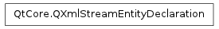

QXmlStreamEntityDeclaration ¶

Synopsis ¶
Detailed Description ¶
The PySide.QtCore.QXmlStreamEntityDeclaration class represents a DTD entity declaration.
An entity declaration consists of a PySide.QtCore.QXmlStreamEntityDeclaration.name() , a PySide.QtCore.QXmlStreamEntityDeclaration.notationName() , a PySide.QtCore.QXmlStreamEntityDeclaration.systemId() , a PySide.QtCore.QXmlStreamEntityDeclaration.publicId() , and a PySide.QtCore.QXmlStreamEntityDeclaration.value() .
- class PySide.QtCore. QXmlStreamEntityDeclaration ¶
- class PySide.QtCore. QXmlStreamEntityDeclaration ( arg__1 )
-
Parameters: arg__1 – PySide.QtCore.QXmlStreamEntityDeclaration Creates an empty entity declaration.
Creates a copy of other .
- PySide.QtCore.QXmlStreamEntityDeclaration. name ( ) ¶
-
Return type: PySide.QtCore.QStringRef Returns the entity name.
- PySide.QtCore.QXmlStreamEntityDeclaration. notationName ( ) ¶
-
Return type: PySide.QtCore.QStringRef Returns the notation name.
- PySide.QtCore.QXmlStreamEntityDeclaration. __ne__ ( other ) ¶
-
Parameters: other – PySide.QtCore.QXmlStreamEntityDeclaration Return type: PySide.QtCore.bool Compares this entity declaration with other and returns true if they are not equal; otherwise returns false.
- PySide.QtCore.QXmlStreamEntityDeclaration. __eq__ ( other ) ¶
-
Parameters: other – PySide.QtCore.QXmlStreamEntityDeclaration Return type: PySide.QtCore.bool Compares this entity declaration with other and returns true if they are equal; otherwise returns false.
- PySide.QtCore.QXmlStreamEntityDeclaration. publicId ( ) ¶
-
Return type: PySide.QtCore.QStringRef Returns the public identifier.
- PySide.QtCore.QXmlStreamEntityDeclaration. systemId ( ) ¶
-
Return type: PySide.QtCore.QStringRef Returns the system identifier.
- PySide.QtCore.QXmlStreamEntityDeclaration. value ( ) ¶
-
Return type: PySide.QtCore.QStringRef Returns the entity’s value.